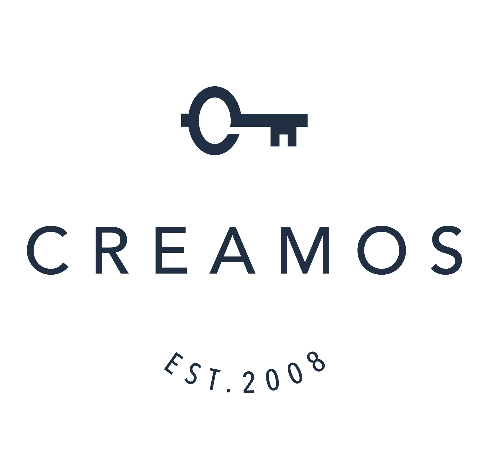
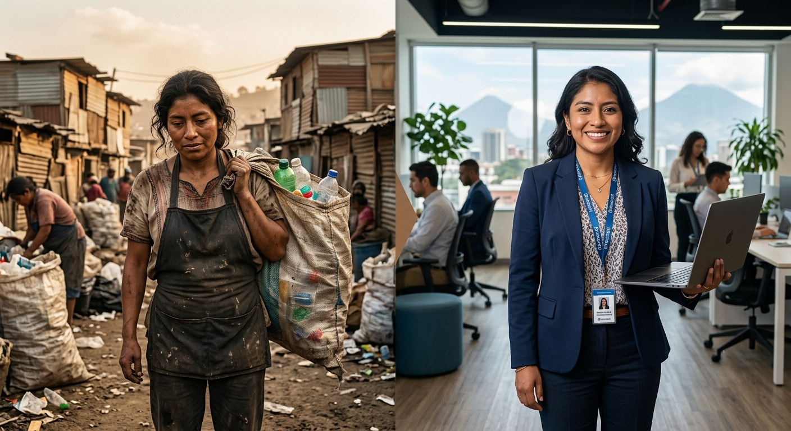

Recepción
Aquí comienza todo. El primer punto de contacto donde cada historia toma forma y donde una persona decide dar el primer paso hacia su propia transformación.

Gestión de Impacto
Comparte una o dos palabras usando el enlace

Llegó a Creamos buscando comenzar su proceso educativo y mejorar su condición de vida por medio de un trabajo mas digno.
Encontró mucho más que eso.
Aquí comienza todo. El primer punto de contacto donde cada historia toma forma y donde una persona decide dar el primer paso hacia su propia transformación.
Participantes con responsabilidades de cuidado de menores logran participar con tranquilidad al acceder a un recurso indispensable que protege de dejar a los menores en condiciones inseguras.
Participantes con responsabilidades de cuidados y ciclos de violencia logran independencia económica acercándose a una dinámica laboral segura, recuperando su autoestima y estabilidad emocional en el camino.
Participantes que encuentran en sí mismos capacidades que no conocían, superan sus miedos y las brechas laborales para lograr autonomía e independencia económica, emocional y personal.
Participantes con más herramientas obtienen conocimiento y certificaciones que les permiten cerrar con mayor facilidad la brecha hacia el empleo formal y la educación superior.
Participantes con autonomía en su salud mental logran nuevas herramientas de gestión emocional, cambian su percepción de sí mismos y ganan la seguridad y confianza para sostener ese cambio.
El recorrido de cada persona es único. No siempre se siguen todos los programas ni en el mismo orden.